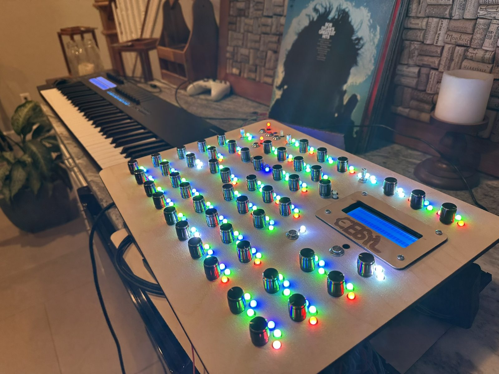

Hi, I’m Dylan!
I’m a first-year at Harvard studying electrical engineering, and I love everything music and computers! I usually pick up a new skill by building something with it, then posting what I learned for people to see and learn from it too.
Projects

2023 – 2025
CESyL
A synthesizer I designed and built from scratch, with 55 encoders, about 300 RGB LEDs, three custom PCBs, and a Teensy and RasPi running it all.
!play
2022 · ongoing
Bobbert
An async Python Discord bot that streams music into voice channels for my friends.
33⅓
2023
Record player repair
Repairing my grandparents’ turntable from the 70s.
~/
2026 · in progress
Learning Linux
Dual-booting Arch on my laptop and configuring my own desktop, with Claude as a tutor.
MAKE
2023 – 2026
Empty place → Makerspace
Planning, funding, and opening the makerspace at my high school.